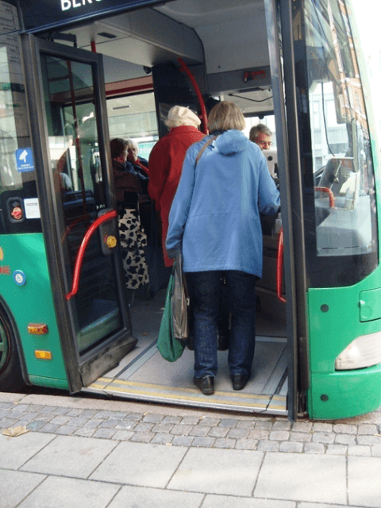
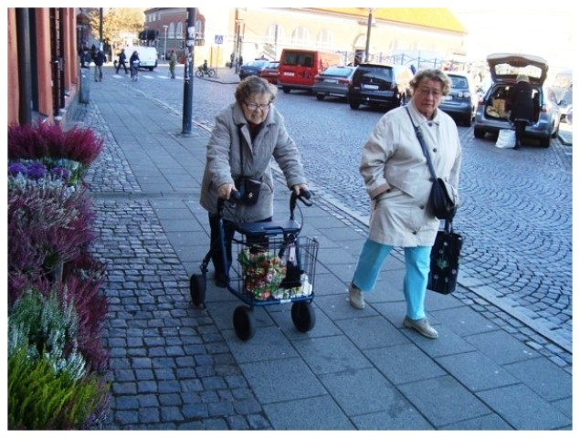

從健康、飲食到社交活動，都能看到瑞典政府在背後推動的痕跡。走在瑞典街頭會強烈感受到，這個城市在打造時，沒有遺漏老人與小孩的需求。 做好無障礙設施只是基本，道路高低落差、公車停靠方式、超市置物架的高度設計，都將老人與小孩的不方便考慮進去了。所以到處都可以看到推著「助行小推車」的老人、推著嬰兒推車的父母，以及不良於行的障礙者去散步、去圖書館、去餐廳、去超市。 對照之下，上述這些人在台灣會因為外出非常不便，因此都快在街頭消失了。
除了道路設計，瑞典的交通接送服務也做得很完善。 我們參觀了隆德的老人聚會中心，來這裡的，都是生活可自理的老人。他們在家可能需要居家服務，但仍會安排外出活動，拄著拐杖或推著助行小推車來中心聚會，政府也提供免費交通服務讓他們方便過來，聚會中心甚至會提供簡易輔具維修服務。 聚會中心每周舉辦戶外活動，到鄰近的國家自然公園踏青。公園的交通非常便利，無論是政府規劃的自然公車路線，或一般公車、火車，都能方便到達。 自然步道也有無障礙設施，無論坐輪椅或推嬰兒車，都能毫無障礙地移動。「自在地外出散步」對長者身心健康有很大的助益，做好基礎建設就能促進國人健康，絕對是一石二鳥的划算投資。
除了基礎建設做得好，瑞典的生活文化本身就有益健康。大部分人到瑞典學到的第一個瑞典文，就是「fika」。 fika的意思就像著名廣告詞：再忙，也要跟你來杯咖啡。最基本的fika套餐是咖啡加肉桂捲。我們一共拜訪了16個單位，真是無處不fika。而我們也體會到，「坐下來喝杯咖啡」的意義不只是一杯咖啡，而是「一起喝咖啡，把心慢下來」的文化。 相較於台灣人「愛拚才會贏」，在忙碌中適時喘息一下的fika文化，對個人、社會的身心健康都比較好。
除此之外，瑞典人熱衷於文化、節慶活動，且很愛自組社團。例如，出生在二次大戰前後這一代的老人非常喜歡唱歌，有自組無伴奏合唱團、爵士樂團。女性長者則喜愛織布，無論是老人公寓或老人聚會場所，都擺著大大的木架織布機，老人們一邊織布一邊聊天fika，是常見的景象。 老人聚會所也順應著這樣的文化，以自組社團活動為主。無論是哪一種活動，瑞典設計高齡公共空間的目的，都是讓大家有機會相遇、交流，促進身心健康與社會參與。 以隆德市為例，55歲以上人口約2萬7千多人，就有15個老人聚會中心，每月排出來的活動，需要一整本刊物才能列完: 老人也忙著規劃自己下個月的「班表」與交通。瑞典政府在健康促進、攔截失能著力之深，可見一斑。 老後，要自己住或與子女同住？要關在家裡還是出去走走？生病了找誰照顧？要好死或是賴活？希望政府做什麼，又願意為這個「希望」付出多少錢？ 其實，這一連串決定組成瑞典人的選擇，代表的是這個國家的人民對老死的看法，也影響了政府的政策思維、責任內涵與用錢哲學，最後成就了這個老人天堂。